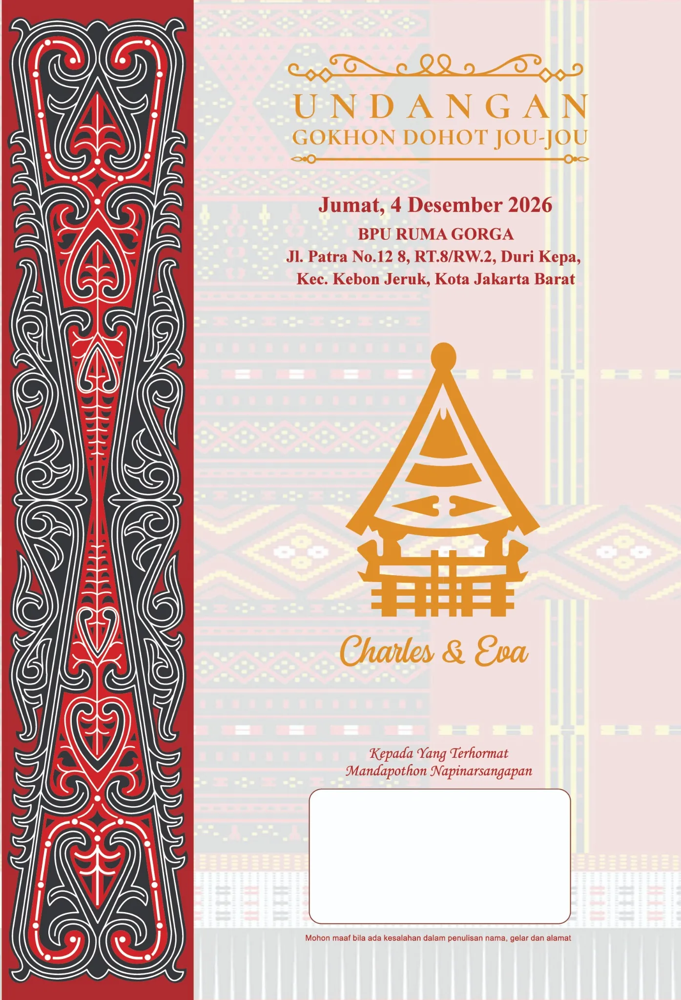
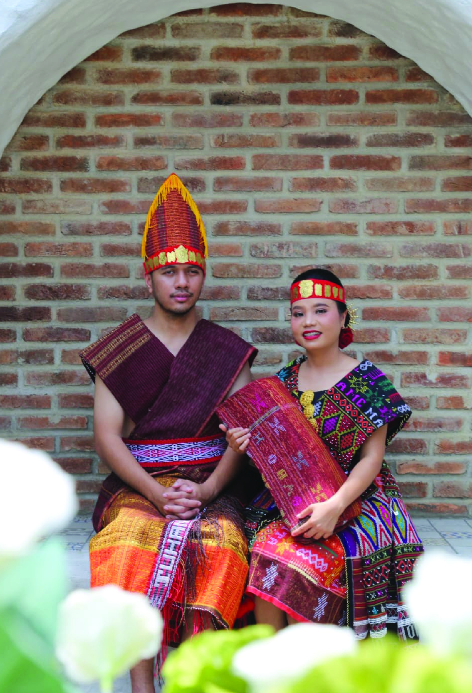

Tamu Undangan
Kepada Bapak/Ibu/Saudara/i Kami Mengundang Anda

Undangan Pernikahan & Pesta Adat Batak Toba
Horas, Tamu Undangan!
Lihat Undangan ↓Horas Tondi Madingin, Pir Tondi Matogu

“Berdua lebih baik dari pada seorang diri, karena mereka menerima upah yang baik dalam jerih payah mereka.”
(Pengkhotbah 4 : 9)
“Kiranya Engkau sekarang berkenan memberkati keluarga hamba-Mu ini, supaya tetap ada di hadapan-Mu untuk selama-lamanya. Sebab apa yang Engkau berkati, ya TUHAN, diberkati untuk selama-lamanya.”
1 Tawarikh 17:27Menuju Hari Bahagia
Rangkaian Acara
Momen Berharga
Konfirmasi Kehadiran
Mohon konfirmasikan rencana kehadiran melalui WhatsApp penyelenggara.
Tanda Kasih